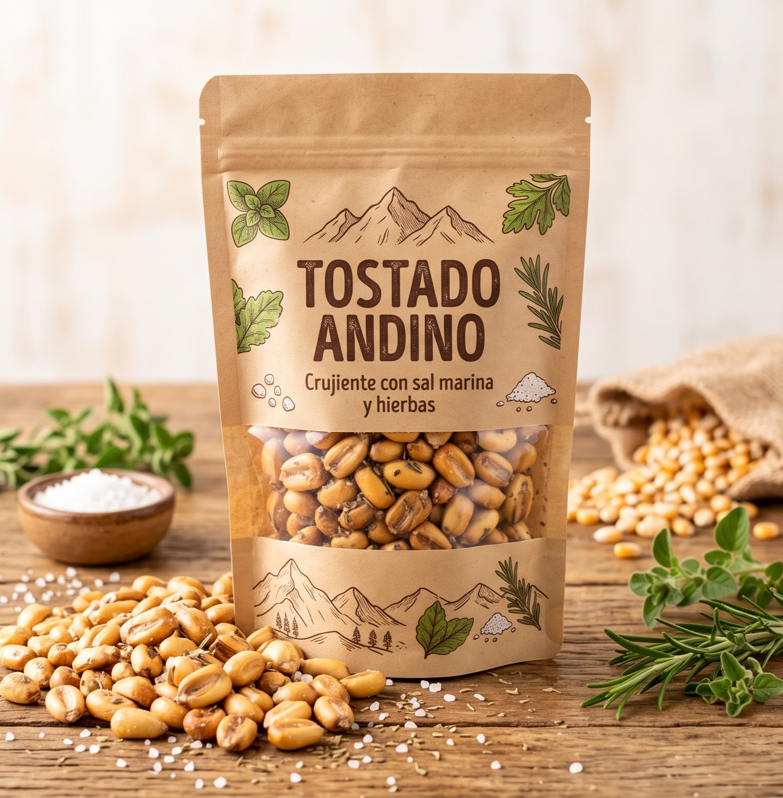
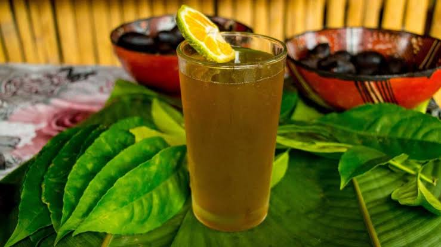

Catálogo de Productos · LIRACAM

Tostado Andino Crujiente con Sal Marina y Hierbas
Maíz tostado tradicional de la serranía ecuatoriana, sazonado con sal marina y hierbas aromáticas finas. Snack 100% natural, crocante y nutritivo.

Infusión fría de Guayusa Orgánica con Limón
La guayusa es una bebida ancestral ecuatoriana muy comercializada en tiendas saludables de Quito por sus propiedades energizantes naturales.